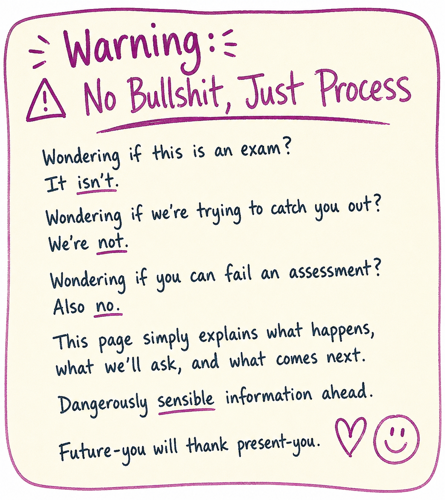
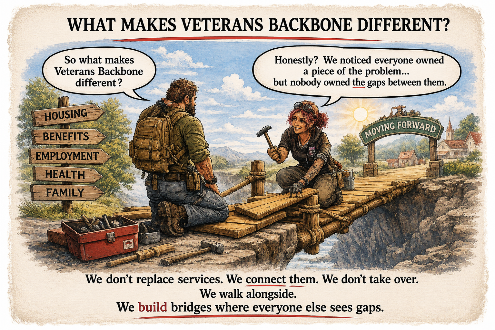

Self-referral
Our proposed model would allow direct self-referral once the service opens.
No exam. No interrogation. No clipboard of doom.
Our future approach starts with understanding what is going on.

Our proposed model would allow direct self-referral once the service opens.
Other organisations may be able to refer, under agreed arrangements after launch.
Professionals may be able to make referrals when appropriate consent and information-sharing arrangements exist.
Friends or family may encourage someone to seek help, but we would still need to respect the person's wishes, confidentiality and appropriate consent.
All routes are welcome.
That is how we would want the first conversation to begin.
We'd begin with the immediate situation, not somebody's entire autobiography.
We wouldn't assume everything is broken.
We would explore the person's goals, needs, and whether VB could appropriately help.

Nope.
This isn't school.
No pass marks. No trick questions. It is an assessment of circumstances, not human worth.
The proposed assessment would consider the situation — not a person's worth.
Absolutely not.
Trust takes time.
Once the service opens, we intend to explain what information is necessary, why it is needed and how it can be shared safely.
We do not intend to pretend we can do everything.
After launch, if another service is better placed to help, our aim will be to explain that honestly and discuss appropriate signposting or referrals, with relevant information-sharing safeguards.
Useful beats impressive.

When operational, the proposed process would assess circumstances, explore suitable support and agree the next sensible step.
Person first. Situation second. Paperwork somewhere after that.